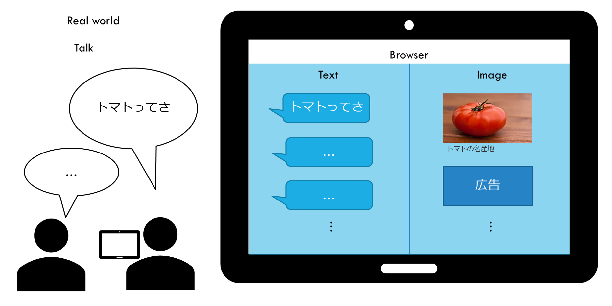

会話を可視化するサービスの構想: vistalk(仮)

作りたいサービスの具現化に向けて情報収集する。サービス名は仮に"vistalk"と呼ぶことにする。
作りたいサービス: vistalk（仮）
- サービス（Webサイト）を立ち上げた状態で会話すると、
- 会話が勝手にテキスト変換され、
- キーフレーズに関連するリンクやECサイトの商品リンクが画像として表示される
- ユーザーは、画像自体やリンクをたどって得た情報を得て、会話を深める
こんなイメージ 
必要な機能をリスト化すると
- 音声認識
- キーワード抽出
- 画像検索
各種機能の実現方法を検討
音声認識
chromeだとWeb Speech APIを使えば実現可能。
これを使う
キーワード抽出
技術的に簡単そうなのは形態素解析⇒固有名詞抽出？
Kuromoji.js
- Kuromoji を使ってブラウザ上で形態素解析を行う (Reactあり/なし)
意外にもクライアントサイドの JavaScript のみ行けました。
- クライアントPCにkuromojiをインストールが必要
- kuromoji.js demo
開発用途なら無料のWeb API
キーワードを抽出するならこちらがベター
キーワードを直接抽出できそうな、Yahooのキーフレーズ抽出APIを使う
画像検索
関連商品があれば広告を表示
ここで収益化。
「キーフレーズ⇒商品検索⇒紹介リンク作成」が自動化できればいい。
楽天
- 楽天商品検索API: 「キーフレーズ⇒商品検索」ができそう
デベロッパーは、楽天商品検索APIから取得した商品情報からアフィリエイトURLを作成することが可能です。リンク先にそのアフィリエイトURLを指定することで、楽天アフィリエイト経由の成果報酬を獲得することができます。
- 楽天アフィリエイト: ここでも人力で同じような処理ができる
Amazon
- Product Advertising API の概要
よりすばらしいことに、Product Advertising API は無料でご利用いただけます。すでに数多くの Product Advertising API 利用者が、このサービスを利用したアプリケーションやオンラインストアを開発し、アソシエイトとしての報酬を手にしています。Amazon アソシエイト・プログラムメンバーへの登録と併せて、 Product Advertising API の利用登録を行うことで、誰でも Product Advertising API により作成されたアプリケーションや Web サイトを通じてアソシエイト報酬を獲得できます
- Product Advertising API について: amazonアソシエイト・プログラム登録には審査が必要
ゴールド会員になっている楽天の商品検索APIを使う
なければ画像検索結果を表示
有名どころのAPIは無料枠が限定的
Rakuten Rapid APIなら割安
だが、完全無料がいい。
完全無料でやるなら、サーバ使ってスクレイピング
★だが、できればgithub pagesで完結したい